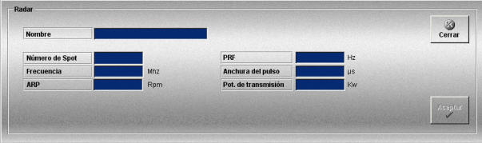

Radar
La creación y edición de radares se realiza mediante la siguiente ventana.

Esta ventana permite definir los radares que podrán ser añadidos a las unidades participantes en los Ejercicios.
Para cada radar se definen los siguientes datos:
Nombre: Nombre del radar.
Formato: caracteres alfanuméricos.
Número de Spot: Este parámetro identifica de forma única a cada radar.
Unidades: adimensional
Rango: hasta cinco caracteres alfanuméricos
Frecuencia: Frecuencia de operación del radar.
Unidades: megahercios
Rango: 0 - 99999
ARP: Periodo de rotación de la antena.
Unidades: revoluciones por minuto
Rango: 5 - 30
PRF: Frecuencia del pulso.
Unidades: hercios
Rango: 900 - 4000
Anchura de pulso: Ancho de pulso.
Unidades: microsegundo
Rango: 1 - 99999
Potencia de transmisión: Potencia de transmisión.
Unidades: kilovatios
Rango: 0.0 - 100.0